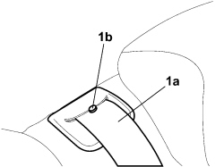
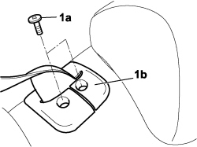
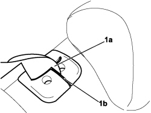

7050A40 CENTRAL REAR SEAT BELT PANNEL ATTACHMENT R R
- Path
- Procedures > 70 FITTINGS > 7050 REAR SEATS > 7050A REAR SEAT ASSEMBLY > 7050A40 CENTRAL REAR SEAT BELT PANNEL ATTACHMENT R R
- Kind
- repair procedure (removal / refitting; the operation number is the code)
- Applies to
- all engines; all production periods
- Interactive page
- https://sloeber94.github.io/elrnDB-fCrm/en/#/194001147
Applies to: all engines; all production periods
 Removing
Removing
 Refitting
Refitting1. Extract the belt (1a) upwards to access the fixing bolts and make sure that during the entire removing-refitting procedure the sliding locking button (1b) does not enter the seat.

Applies to: all engines; all production periods
1. Undo the bolts (1a) and release the trim (1b).

Applies to: all engines; all production periods
1. Remove the trim releasing the belt (1a) via the opening (1b).

Applies to: all engines; all production periods
Refitting
Removing- Make sure that the belt sliding locking button does not enter the seat.
- Insert the belt via the opening in the trim.
- Position the trim in the housing and tighten the bolts.